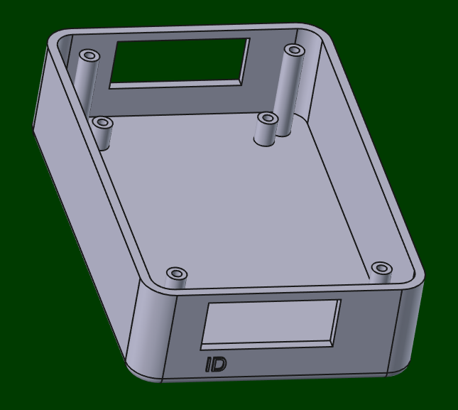
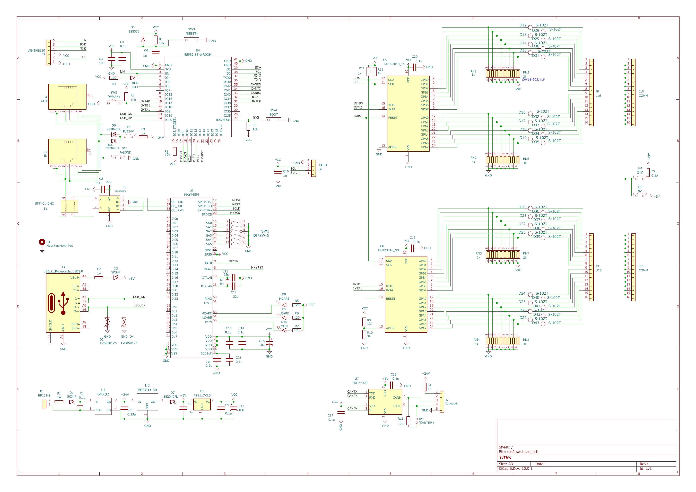
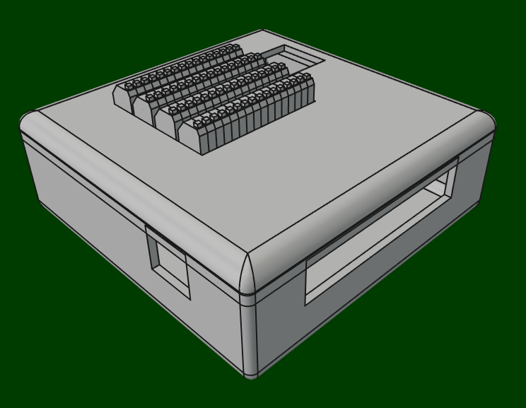

MIO基板仲間たち
MIOシステムのメンバーです。
アナログ入出力のCAN基板以外は32ビット入出力です。
今後も逐次増やしていきます。


MIOセンター紹介
まずは回路図。
 ESP32-S3ベースのMKY44SPIと接続するシンプルな回路です。
ESP32-S3ベースのMKY44SPIと接続するシンプルな回路です。
簡易なPoEとしていますが、500mA程度がMAXです。
ESP32なので、USBだけでなく、WIFIとBluetoothで上位マシンと接続できます。

ファームウェアの構成は今のところ以下の構造としています。
├─App
├─Domain
│ ├─Helpers
│ │ jsonhelper.h
│ │ stringhelper.h
│ │ systemhelper.h
│ │
│ ├─Models
│ │ devtype.h
│ │ inmapinfo.h
│ │ mapattr.h
│ │ outmapinfo.h
│ │ palmode.h
│ │ wifiinfo.h
│ │
│ ├─Parsers
│ │ wifiparser.h
│ │
│ ├─Repositories
│ │ iblerepository.h
│ │ idmxrepository.h
│ │ ierrorservicerepository.h
│ │ ifilerepository.h
│ │ imailservicerepository.h
│ │ imapperrepository.h
│ │ imediaterrepository.h
│ │ imkyrepository.h
│ │ iparserepository.h
│ │ iserialrepository.h
│ │ iwificurepository.h
│ │ iwifirepository.h
│ │
│ ├─Services
│ │ errorservice.h
│ │ mailservice.h
│ │ mediaterService.h
│ │
│ └─Shared
│ common.h
│ constant.h
│ errorcode.h
│
└─Infrastructure
│ factories.h
│
├─Drivers
│ bledriver.h
│ filedriver.h
│ mkydriver.h
│ serialdriver.h
│ socketdriver.h
│ wificucenter.h
│ wifimanage.h
│
├─Fakes
│ mkyfake.h
│
└─Shared
config.h
drivers.h
timermanager.h
苦労したのは、MKYとのSPIアクセスです。
コンストラクタでの初期化はブートと衝突しないようlazyで行わなければならず、ESPのSPIレジスターをダイレクトに叩いてタイミング調整が必要でした。
_spi = spiStartBus(SPI_NUM, clkdiv, SPI_MODE2, SPI_MSBFIRST);
_spi->dev->user1.cs_hold_time = 10; // tCSH
_spi->dev->user1.cs_setup_time = 10; // tCSS
オリジナルのハンドルを再定義し、内部レジスターにアクセスしています。
アセンブラの方が楽なので、今はアセンブラに修正しています。
このトリミングが無いと、不安定になります。
ちなみにRustではこの辺ができるのかesp-idf-halをながめてみましたが、ラッパー&ドロップできる形態では無いようです。
もちろん、unsafe cコールでできますが、トリミングできるfnは欲しいものです。
MIOスイッチ入力
まずは回路。

これもシンプルな回路で、ドライバーと定電流->電圧変換だけです。